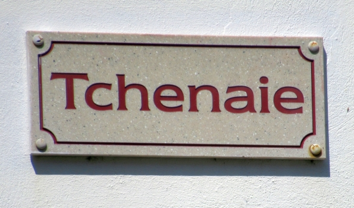
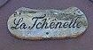

 
|
L'aoutre jour, quand j'tais à m'promné, Je refléchissais su le qu'mein, Quand je viyiais en passant La route parsemeai de giands. J'eim disais chu p'tit giand là, Chest domage qui reste là, Pour être pillet et êcrâzet, Vaudret mus qui sçait ramasset. J'ai tchique fais veu des p'tits êfants Avec des pagniers rempyïes d'giands, J'comprends qui les donnent est animaoux Pour les faithe craître gras et biaux. Quand je marchais douochottement, J'pensais à la valeur d'un giand Qui à nos yieux pathais einsignifiant Et qu'est d'eunne grande conséquence, en même temps. Si chu p'tit giand là tet piantet, Eun grand arbre y deveindret, Car y craîsent diversément grands, Et y peuvent vivre pus de chent ans. Yia des forêts qu'en sont rempyïes; Et dedans les oiziauix font lus nids, Tchet dans eun tchiênne que l'Roie Charles se muchit Pour vingt-quatre heures y s'meint là à l'abri. Chest eune arbre grand et eimportant, Y peur rêsisté la fureur du vent, Les oieziauix chantent et s'rêjouissent dedans Et j'eine tet qu'eun p'tit giand pourtant. Et pis quand il est daîsrachinet, Eunne partie est bûchit et brûlet, D'aoutres morcieaux sont bein ramâsseais Y sont trop bons pour être brûleais. Nou z'en fait de grands bâtiments Qui vont sus la mé en tuous temps, Y vont d'eune but du monde à l'aoutre Portai marchandises, pâsagiers et aoutres. Ils en font du meubyïeu pour orné les maisons, Y sert pour plusieurs générations. Chest du boies d'eunne grande utilitet Qui duthe et sert pour eunne êternitet. Les Roies en ont dans lus palais, Il est erconnu le miyieu boies Dans les Egyïses pour là tchièze et les bancs, Et tout chonna par la piante d'eun giand. V'la qui dévthet nos môtrai Que les p'tites choses y n'faut pas mêprizai, Puisqu'un giand qui sçoïos les pids est foulet, Peut devnait utile s'il est piântet. Mes chieirs anmeins, n'oubliyiez pas Que tandis que j'sommes ichein bas, J'pouvons rêjouit le pauvre, l'affligit, Par eun conseil, eun avis, eun souorit.
P.S. – J'avons eun "Escritoire" en tchiênne qu'est presque nai,
|
Viyiz étout: